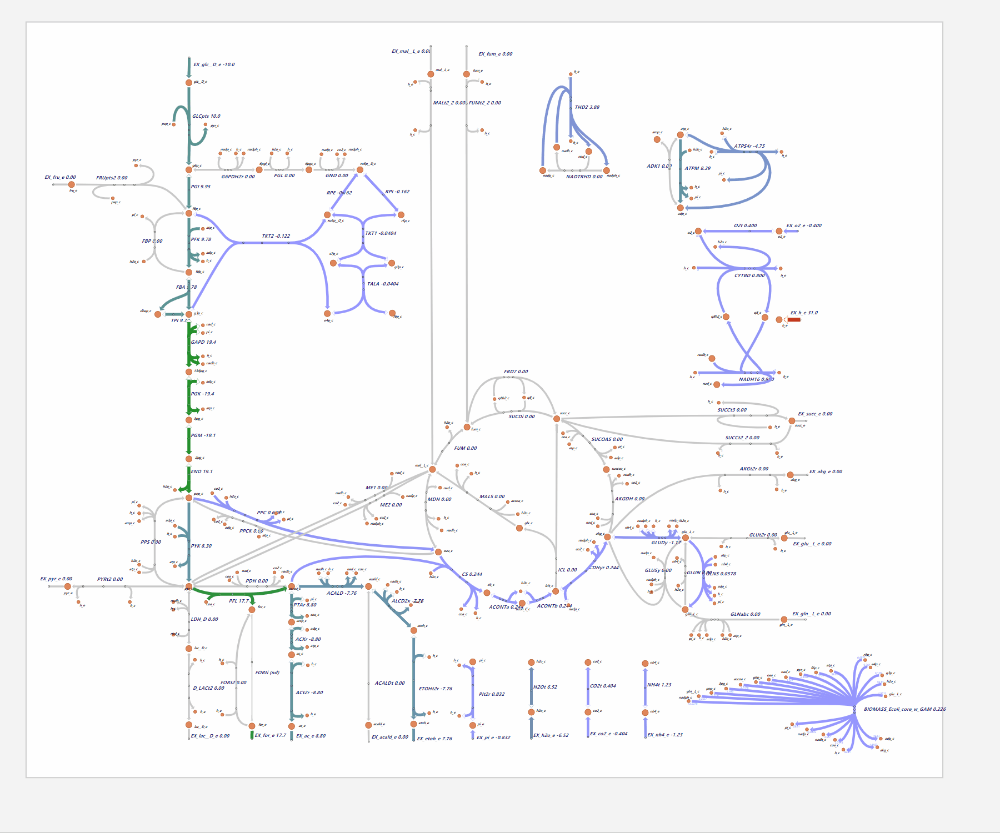

Provided by Gao Senquan(2019013224), Chen Shurui(2019013222), Diao Tongxin(2019013240) and Lu
Minsi(2019080058) in THU. We've also push it to Github repository
(Available at https://github.com/maxwell-gao/CH_metabolism_path)
The majority of our figures are generated by [Escher] (https://github.com/zakandrewking/escher/),
[COBRApy] (https://opencobra.github.io/cobrapy/)
and models in [Jupyter Lab] (https://jupyter.org/). The
BioRender is also used for figure creating.
We use COBRA as an analyzing tool based on omics data flux to reveal how the metabolism flux
actually works in the living body.
This comprehensive homework is composed of three major parts: the source code we use, the figures we draw with various tools (we believe that you may find them so different from each other soon😂), and the document you are reading now (in the HTML form and the markdown form).
We aim to provide a creative form for biochemistry reviewing and understanding though we know that’s a hard work.



Heirendt L, Arreckx S, Pfau T, et al. Creation and analysis of biochemical constraint-based models using the COBRA Toolbox v. 3.0[J]. Nature protocols, 2019, 14(3): 639-702.
Rowe E, Palsson B O, King Z A. Escher-FBA: a web application for interactive flux balance analysis[J]. BMC systems biology, 2018, 12(1): 84.
Brunk E, Sahoo S, Zielinski D C, et al. Recon3D enables a three-dimensional view of gene variation in human metabolism[J]. Nature biotechnology, 2018, 36(3): 272.
Nelson D L, Lehninger A L, Cox M M. Lehninger principles of biochemistry[M]. Macmillan, 2008.
Nelson D L, Cox M M. Lehninger Principles of Biochemistry Lecture Notebook[M]. Macmillan, 2004.